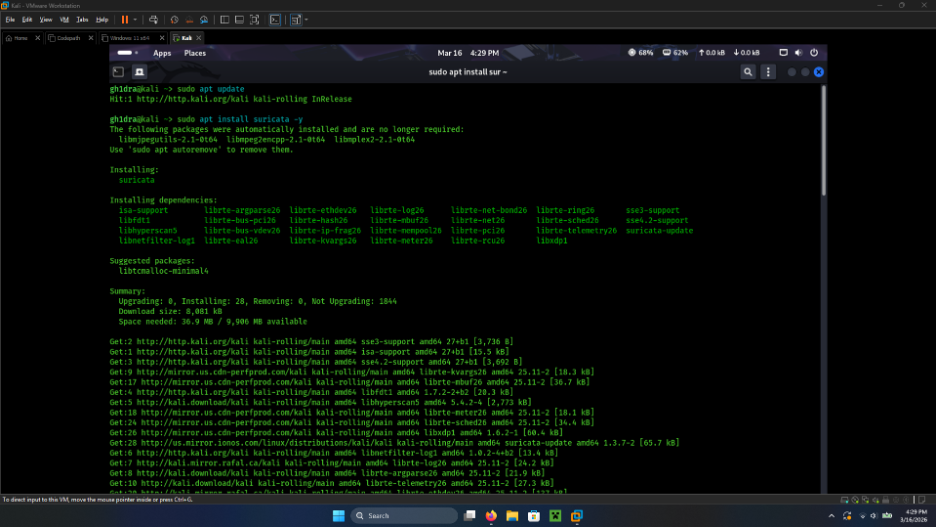
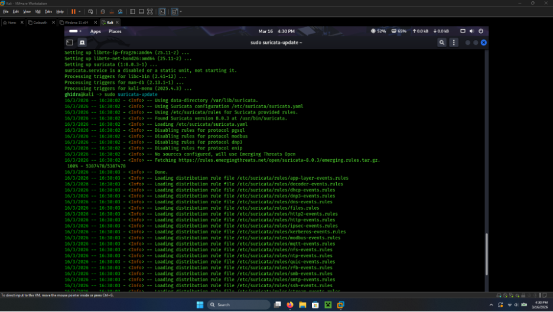
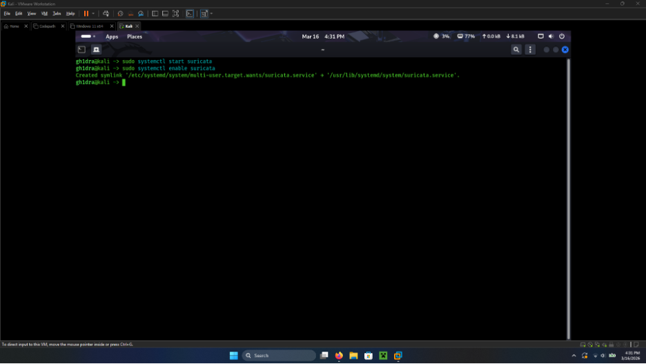
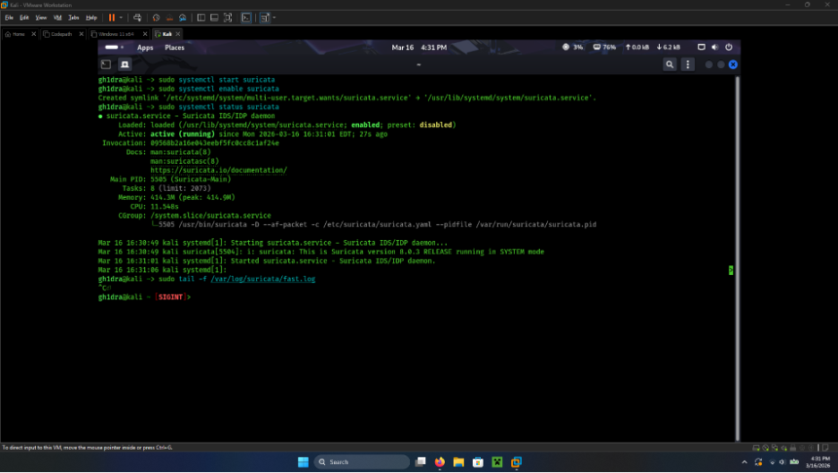
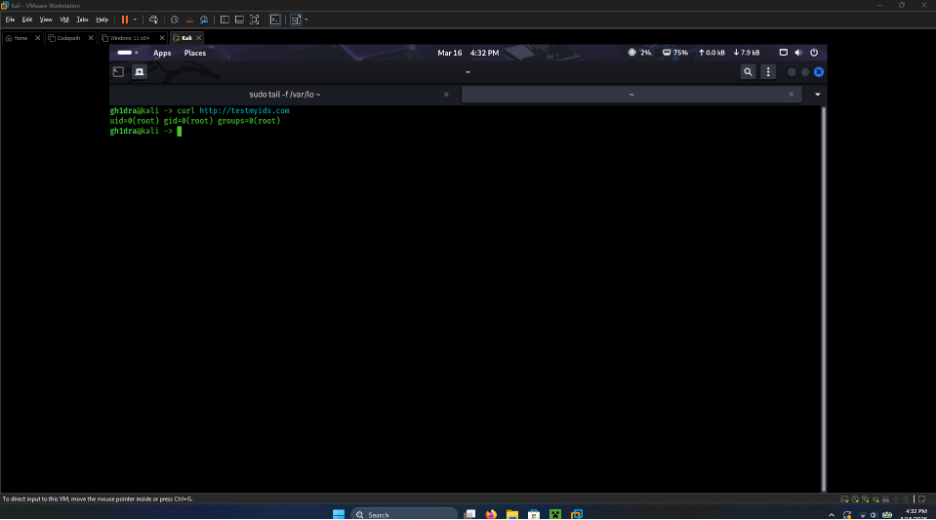
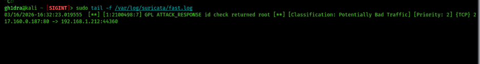

01
Installation
My first steps were installing Suricata on my Kali VM. I started with package updates, then installed Suricata and its dependencies with apt.

After the packages landed, I refreshed the rule set with suricata-update so the
engine had current Emerging Threats open rules to load.

02
Starting and Enabling the Service
Once Suricata was installed, I started the service and enabled it so it would come up on
boot. Then I ran sudo systemctl status suricata to verify it was running—status
showed active (running) for Suricata 6.0.3 in SYSTEM mode.

suricata.service.
I also opened sudo tail -f /var/log/suricata/fast.log so I could watch the live
alert log while testing.
03
Verification with testmyids.com
To confirm the IDS was inspecting traffic, I used
curl http://testmyids.com. That endpoint returns a short string that mimics a
root shell id check—benign traffic designed to trip a well-known signature. The HTTP body
came back as expected, and Suricata wrote a matching warning into
fast.log.


fast.log:
GPL ATTACK_RESPONSE id check returned root.04
Takeaway
Getting Suricata installed was only half the check. Starting the service, confirming
active (running), and seeing a live line land in fast.log after a
known test request is what made me confident the IDS was actually watching traffic—not just
installed on disk.